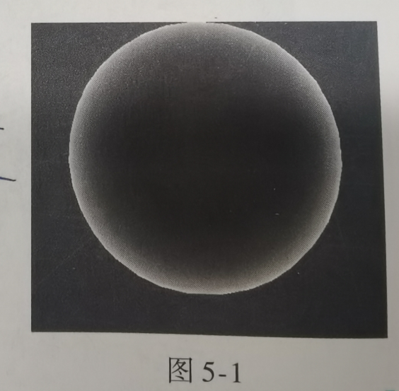
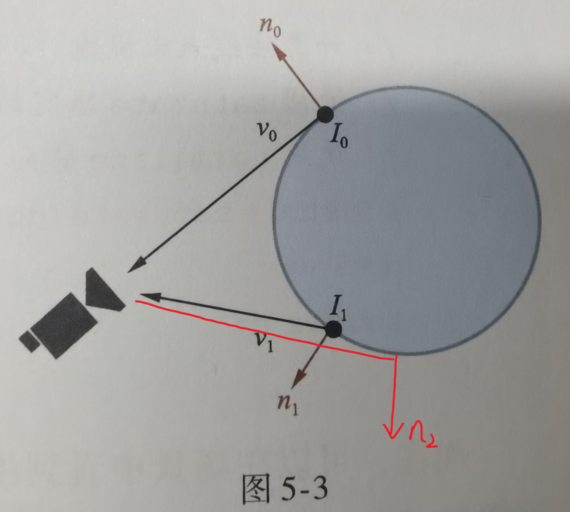
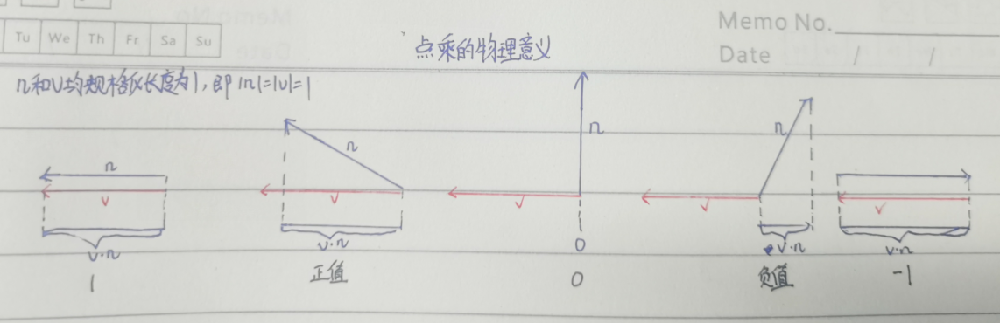
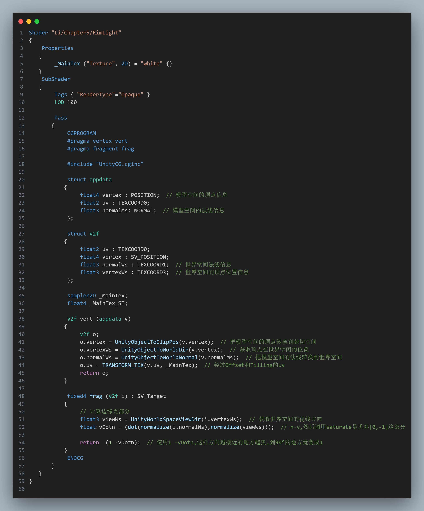
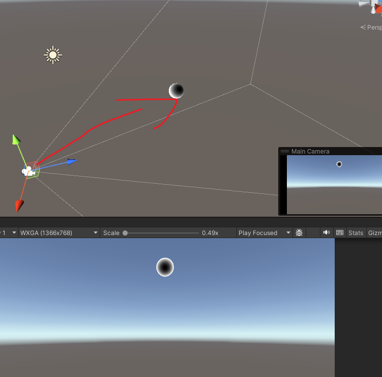

5.1 边缘光效果
5.1.1 如何"看到"外边缘
目标效果
从现实当中的菲涅尔效应Fresnel effect,摄影当中的轮廓光,抽象出来的效果边缘光RimLight

那么边缘是什么?
是我们能看到的物体的外轮廓.
那么外轮廓又有什么特性?
是视线在物体上的切线,该点的法线方向和我们的摄像机视野方向是垂直的.
那么我们怎么利用这个特性来识别边缘?
向量的点乘,v和n的点乘,根据线性代数的知识,我们知道v·n得到的结果是v在n上的投影乘以n的长度,如果n规格化长度是1.那么就是n在v上的投影长度了,如果n也规格化,那得到的就是n在v上的投影是v长度的百分比了,所以如果是垂直的,v在n上投影是0,如果是180°,那么v在n上的投影是-n的长度.
不同数值代表的物理意义:
当n和v都规格化之后,n·v=0表示他们两个方向是垂直的,n·v=1表示两个向量方向完全一样,n·v=-1表示方向完全相反,[1,-1]就表示了两个向量的方向从相同到相反的过程.

根据点乘和方向的关系,我们来编写代码


出现了摄像机异常情况,如果摄像机靠近就变成白色了
